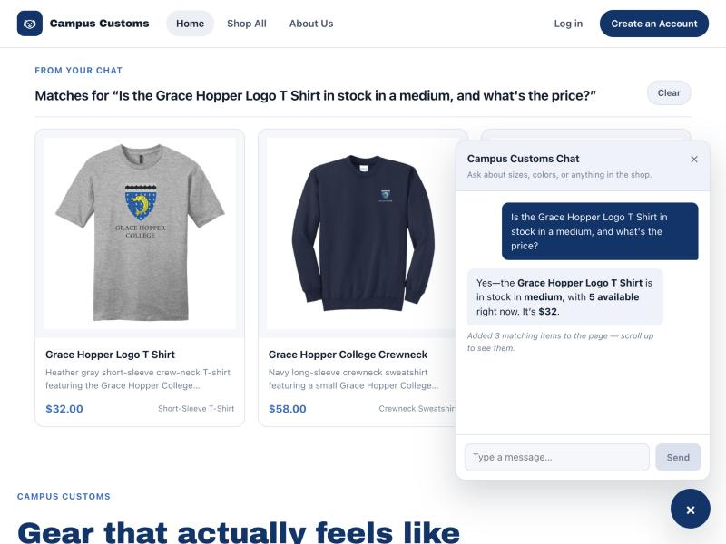
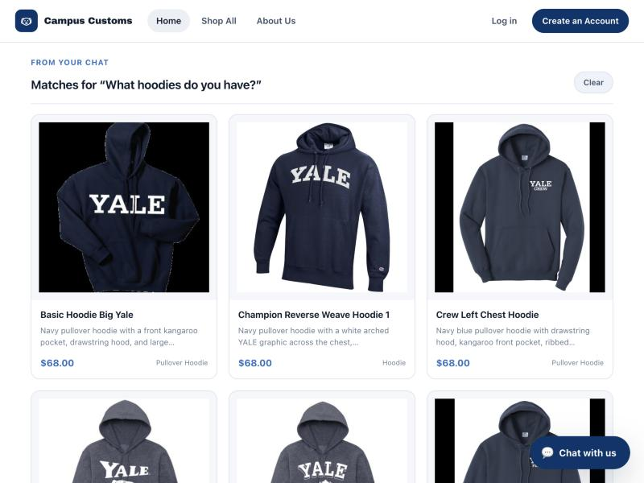
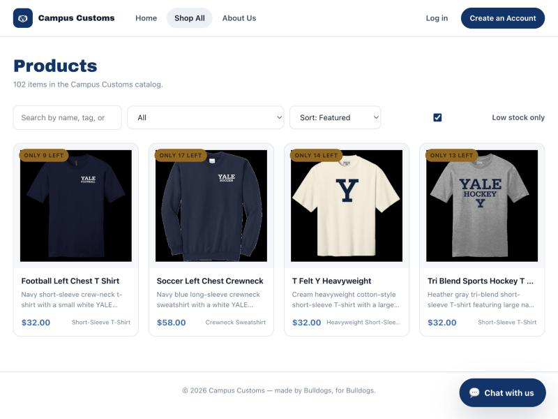

Chat gives honest stock and price from the database

Asked the chat, "Is the Grace Hopper Logo T Shirt in stock in a
medium, and what's the price?" It replied "5 available,
$32" — checked directly against campus_customs.db:
the inventory table has exactly 5 units of
size M for that product, and catalogue.price is exactly
$32.00. The agent never guesses these numbers — both
came from a real check_stock tool call against the
database on this turn.
A category question dynamically updates the page with matching products

Asked the chat a category question, "What hoodies do you have?"
— with no product named. The agent ran search_products and
a "From your chat: Matches for “What hoodies do you
have?”" shelf of real hoodie product cards appeared on
the page itself, above the fold, each one clickable straight into its
full product page.
Usability feature (Problem 9): "Low stock only" filter + urgency badges

On the Shop All page, checking "Low stock only" filters the full 102-item catalog down to exactly the 4 products at or below the low-stock cutoff, each showing its real "Only N left" badge (9, 17, 14, and 13 units) — the same cutoff the badge and the filter both use, so they can never disagree with each other.
Verified: 102 products → 4 when filtered, each badge count matches live inventoryA real bug found and fixed during this testing pass
The first attempt at Check 2 (asking "What hoodies do you have?") came back with zero matches and a reply claiming the catalog had no hoodies — which is false; dozens exist.
Root cause: tools.py's search scored matches with plain
substring checks, and the catalog's garment_type field
says "pullover hoodie" (singular) while the shopper's word was
"hoodies" (plural) — "hoodies" is never a
substring of "hoodie", so the match silently failed.
Fixed by having the search check both the singular and plural form of
every search token before scoring a match, re-verified directly
against search_products() (0 → 27 matches for the exact
same query) before retaking the Check 2 screenshot above.